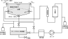

2025年
問題139 特殊設備に関する次の記述のうち，最も不適当なものはどれか．
（1）水景施設への上水系統からの補給水は，必ず吐水口空間を設けて間接的に給水する．
（2）水景施設における維持管理としては，貯水部や流水部の底部や側壁に沈殿・付着した汚泥などの除去も必要である．
（3）厨房機器の材質は，吸水性がなく，耐水性・耐食性を持つものとする．
（4）オーバフロー方式による浴槽循環ろ過設備の循環水は，浴槽水面より高い位置から浴槽に供給する．
（5）プールの循環ろ過の取水口には，吸い込み事故を未然に防止するための安全対策を施す．
2025年
問題139 正解（4） 頻出度AAA
循環水は，誤飲の防止，エアロゾルの発生の抑制のために浴槽の底部に近い部分から供給しなければならない（厚労省告示「レジオネラ症を予防するために必要な措置に関する技術上の指針」）（2025-139-1図参照）．

出典 公益財団法人 日本建築衛生管理教育センター
「新建築物の環境衛生管理第1版第1刷」中巻551頁 図6-11-3(1) を基に作成
浴場設備では，レジオネラ症対策として，打たせ湯及びシャワーには，循環している浴槽水を用いないこと．又，消毒に用いる塩素系薬剤の注入口は，ろ過器に入る直前に設置する．
-(1) 水景施設には利用形態から「親水施設」「修景施設」「自然観察施設」に分けられる．形態的には池や小川，噴水，滝などがある．
上水を補給する際は，逆サイホン作用による上水の汚染を避けるため，吐水口空間をとって給水しなければならない．
又，排水は排水口空間もしくは排水口開放による間接排水とする．